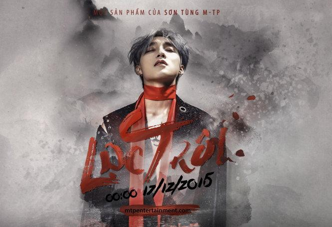

Nguyễn Thanh Tùng
Sinh ngày 5 tháng 7 năm 1994, thường được biết đến với nghệ danh Sơn Tùng M-TP.
(SKY)
Một số hình ảnh của Sơn Tùng M-TP:

Một Số Bài Hát Của Hoàng Tử V-pop:
January 15, 2026.

Nơi Này Có Anh (430.665.678 lượt xem).
Lạc Trôi (282.998.793 lượt xem).
Hãy Trao Cho Anh (303.480.149 lượt xem).
Chạy Ngay Đi (163.738.797 lượt xem).